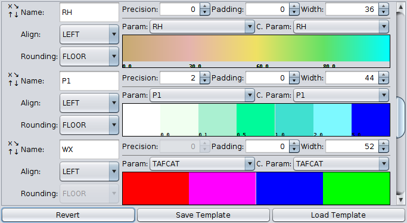

A bit about me...
I'm a hydrometeorologist for the National Weather Service. My primary job is to quality control hourly rainfall data to help provide accurate river forecasts. And I do! That said, it's not always raining, which frees up time to create award-winning data visualization software.
I've made software for quickly viewing and editing hydrographs, rainfall mapping software for comparing mapped estimates with manual observations on the ground, flexible color-coded tabular displays of decoded weather observations, and scatterplots that help compare preliminary radar estimated rainfall. Tools to alert staff when river gages cross significant thresholds and when important text bulletins are received. Another widely used tool of mine helps manage XML configuration files across over a dozen workstations using a simple interface.
Essentially, simplying the analysis of complex hydrometeorological phenomena by creating highly customizable software is my specialty. Check out my projects page!
About ObsMonitor
ObsMonitor is an application I designed and implemented for the display of decoded weather observations. It is operationally used by 45+ National Weather Service offices nationwide. An early version of it received the a local NWS Isaac Cline award in 2015.

ObsMonitor highlighting freezing conditions across
Virginia with obs sorted by temperature and different row colors.
It consists of a tabbed interface, each tab of which contains an auto-updating table of decoded weather displays from a variety of sources.
Users may either view the reverse-chronological history of weather observations at a single location or the latest observations for a configured list of sites. Additionally, you can set the "current" time to an arbitrary time in the past to see the latest observations as of that time.
Data Sources
The data itself is decoded from a variety of formats, namely METAR, WMO FM-13, and WMO FM-18. These represent land-based surface observations, moored buoys and ships, and drifting buoys, respectively, and are read from a local PostgreSQL database. These observations are decoded using regex-based parsing algorithms and assigned metadata from a configurable XML file.
From here, the decoded observations are compared against geographic and parametric filters for inclusion in the table.
Location and Highlighting Configuration
Both using a domain-specific query language -- for example ":t le 32 and :visnum le 0.25 and :spd gt 35 or :gust gt 35" specifies that if visibility is below a 1/4 mile, temperatures are below freezing, and winds are above 35 knots, flag the site for inclusion.
An alternate type of selection criteria uses the encoded present weather types. For example: "DU|SA|DS" specifies that all obs containing references to blowing dust, dust storms, or blowing sand should be flagged.
Typically, geographic filters are used for specifying table locations while parametric filters are used for row highlighting criteria. However both location settings and highlighting settings are able to use both as the end-user sees fit.

The highlighting editor, demostrating both types of parametric filter types.
Column Configuration
Any meteorological parameter that is regularl reported in encoded formats may be displayed in its own column. The user may choose from a number of settings, such as the name displayed in the column header, horizontal alignment, numeric precision, column width, and the colorscale used.
These column configurations may be saved and re-loaded in a different table configuration to make the configuration of subsequent tables more convenient.
Colorscale Configuration
There are three different types of colorscales supported in ObsMonitor: range, gradient, and discrete. Range and gradient colorscales are exclusively applied to numeric parameters such as temperature, relative humidity, and hourly rainfall. Discrete colorscales shade based on string equivalence and are applied to non-numeric parameters like geographic metadata.

The three types of colorscales previewed as part of the columns editor.
Range colorscales are defined as a stepwise numeric function that returns a defined color. Gradient colorscales define distinct numeric bounds to which a value is compared and a color is linearly interpolated. These two types are interconvertable.
Multivariate Sorting
Complex multivariate sorting is supported, with users able to sort the columns by any number of meteorological parameters. For example, a couple could sort the locations alphabetically by state with a secondary sorting criteria by state if they want. Sorting rules invariable follow a "nulls last" policy, where defined values, regardless of magninude, always appear first.
GageScatterPlot
GageScatterplot showing differences between rain gages and gridded rainfall estimates. Gages outside the shaded area are those that differ by more than 10% from the gridded estimates, indicating further QC work may be necessary.
GageScatterplot is a Java program designed to help visualize differences between gridded precipitation estimates and 24 hour rain gage measurements. It is the recipient of regional and local NWS Isaac Cline awards in data acquisition management, and is used by a majority of River Forecast Centers around the US.
It was initially inspired by an earlier program written at West Gulf River Forecast Center which, while similar in functionality, was significantly slower and less flexible. It allows observations to be grouped by several different criteria -- state, county, nearest radar, gage network, and lat/lon bounds. Max/min bounds may also be set on both the gage and grid values. This aids the meteorologist on shift with zeroing in on regions that need extra quality control!
Each time the program is refreshed, it reads all of the latest reported rainfall observations and most up to date gridded estimates, performing a linear regression on the data to give an idea of how well the operational estimates match ground truth. On a typical day, it is used to make sure that r2 >= 0.9.
By mousing over any of the display points, additional metadata about each location can be displayed. Namely, the short ID, full name, state, lat/lon coordinates, rain gage type, distance to the nearest radar, and time of the observation. This can further narrow down the source of the quality control issue!
If locations report rainfall several days in a row, multi-day accumulations can be plotted as well. In fact, this feature was used to create accurate multi-day rainfall maps for the tremendously wet hurricanes Harvey and Florence!
HydroDataViewer
HydroDataViewer is a program designed for the visualization of gridded precipitation datasets and point hydrometeorological data, used by several River Forecast Centers across the US. All of the source code and configuration files are written in Clojure, with the configuration files taking advantange of Clojure's homoiconicity to act as an easily parseable JSON-esque data structure.
It provides the user with flexible, straightforward configuration of ESRI shapefile-based map backgrounds, and customizable zoom/panning presets so the user can quickly navigate to pre-configured locations on the map. Videos showcasing spatial precipitation totals over time can be exported in GIF or AVI format, and it offers the same sorts of colorscale customization as ObsMonitor, only applicable to a spatially gridded dataset.
Configurable Display Presets
HydroDataViewer allows users to configure preset "data bundles" to better facilitate analysis of datasets. For example, at my local office we have one that displays mapped precipitation estimates ending at 12Z that morning, another that opens up a tiled display showing that same data broken up into 6 hour blocks, and another menu item that simply plots the current flood category of various river gages.
Flexible Map Backgrounds
HydroDataViewer allows the user to add their own shapefiles, as long as the shapefile data is stored using lat/lon coordinates. These are loaded using native processing code, projected into a custom polar stereographic projection, and displayed according configurable settings.
Polygon-, polyline-, and point-based shapefiles are supported, with counties, rivers, and cities serving as an example of each. Users may select one field in the metadat to serve as the map label and as many fields as desired to appear on mouseover. Font customization is also provided in the form of font name, size, and color. The color and drawing order of the shapefiles may also be customized. Default settings can be set at both the site and user level, empowering individual users to define their own default map background settings if desired.
Map Navigation
Users may navigate to arbitrary points on the map using a number of different means - lat/lon coordinates, site IDs with locations defined in a local database, and querying the metadata of loaded shapefiles.
Additionally, there is a configurable tear-off menu where users can select from a list of pre-defined map extents. Like most other aspects of the program, this is customizable at both the site and office level!
Exporting rainfall animations
As seen in the top image, HydroDataViewer is also capable of exporting hour-by-hour time series animations of rainfall totals in both GIF and AVI formats. These were distributed by NWS offices on social media in the wake of the event.
QuickHydroBrief

QuickHydroBrief displaying tailwater stage data for Demopolis Lock in Alabama
QuickHydroBrief is a Java based hydrograph display utility used by 25+ Weather Forecast Offices and River Forecast Centers across the National Weather Service created in mid-2018. It offers several advantages -- easy keyboard navigation between different river gage locations and basin groups, automatic pop-ups and audio alerts whenever river stages cross defined thresholds, and easy mouse-based removal of bad data when necessary.
Each configurable river basin is divided into its own tab, with an "All Basins" tab always existing that displays all of the configured locations sorted by flood category. Beside each location is an icon indicating the current flood stage and forecast flood stage to aid in situational awareness. Users may toggle between each tab using the ← & → keys and between sites in the left menu with the ↑ & ↓ keys.
Data is updated with minimal latency whenever a user selects an individual site, and is retrieved by interfacing with a local PostgreSQL database. This means that whenever you view any given hydrograph, you can be sure that it is up to date!
QuickHydroBrief maintains a cache of the most recent reading for each location. This cache is updated on a minute-to-minute basis. Whenever a new value is detected that crosses a significant threshold, a pop-up is displayed and an alarm is heard. Users may toggle this feature on and off both globally and on a site by site basis. Also, QuickHydroBrief supported customized sounds for each user.

The stage change dialog alerting the user that a river has gone from minor to moderate flood stage.